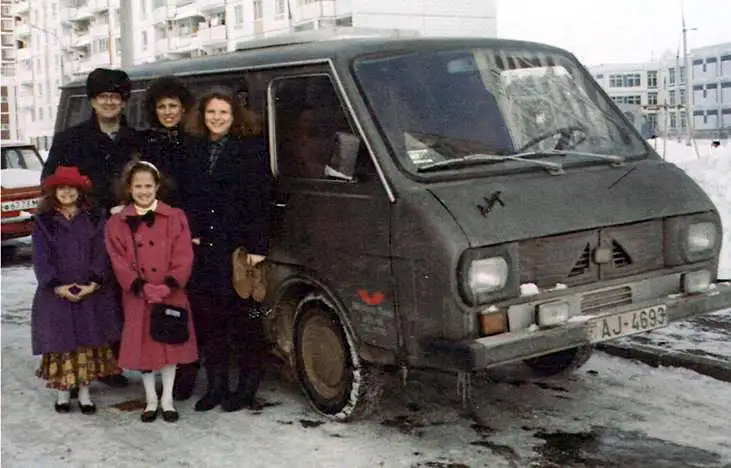

[For the sake of having a repository for my newspaper columns and articles, I reprint them here with permission a week after their run date. The following ran in The Forum newspaper on April 11, 2015.]
{kind=link}

FARGO — In 1995, Jill Mehl was busy cleaning up from the 10th birthday party of her middle daughter, Alicia, in the family’s apartment in Yarkoe, Ukraine, when she heard glass crashing and felt something whoosh past her head.
The bullet had come from a KGB sniper’s gun.
“I ducked to the floor, and the bullet ricocheted around our kitchen,” she recalls, noting that it had narrowly missed her.
In the aftermath, everything went quiet. The phone line now dead, Jill couldn’t reach anyone to piece together what had just happened.
Despite the jolt, she says a feeling of peace washed over her.
Just like in Moscow a few years earlier when, at the market, she witnessed the mafia chasing men through the middle of the square, bodies slammed against glass cases, blood streaming everywhere.
“There was danger going on all around me, but since I didn’t know who I could trust, I just put all my trust in the Lord.”
She’d agreed to leave her quiet life in Fargo, after all, where she and her husband, Peter Mehl, and their three young girls had enjoyed a comfortable, middle-class existence and a flourishing business.
When Peter first approached her about moving to Russia to bring Jesus to the streets there, Jill hesitated. After praying, however, she realized being contrary would only thwart God’s will.
So for the past 22 years, Jill has supported Peter in the midst of the desolation evidenced daily in the former Soviet Union by helping him minister to the hungry, both bodily and spiritually, and serving as a motherly presence to the many who yearn for softness.
“It’s not easy at times,” she says, “but we do it because God has called us and he gives us the ability to fulfill what he’s called.”
Peter’s story
In the early 1990s, Peter, a successful businessman, began to feel unsettled. “The Lord spoke to me and asked, ‘Is this what you want to be doing when I come back?’ And I knew that no, it wasn’t.”
With the wall coming down in the Soviet Union, he says, the time seemed right to go in that direction. So in 1993, he turned over his business to his partner, and the family sold everything they owned to become unencumbered.
“It was a step out in faith,” Peter says, “and also, so there would be no ties here to want to come back to when things got hard.”
And that they did. Back then, Moscow, their first stopping point, was “dark, dirty and gray.” Except for a fax machine to communicate with friends back home, the family was cut off from the world they’d known.
At the time, their now-grown girls, Christina, Alicia and Satia, were only 6, 7 and 11.
Though lacking in material possessions, Peter’s entrepreneurial spirit and God’s grace had followed the family. And in their several decades overseas — where they now live six months out of the year — their efforts have been significant.
Through their nonprofit organization, Russian Harvest Ministries, churches have sprung up in more than 1,000 locations and in 26 states of the Ukraine and beyond, Peter says. Over 20,000 people have been trained through a correspondence Bible school, and 2,500 more in leadership.
In addition, they’ve founded three drug rehab centers and established a Bible smuggling operation near the China border, and their training center has equipped and sent out more than 100 missionaries. Over 100,000 people have pledged their lives to Christ, Peter says.
But it has come at a price. They’ve had their phones tapped into, and many times as they’ve come close to establishing a church building, the government has shut them down, he says. Peter says he has been pulled into a “secret room” and interrogated by the government for hours.
In earlier years, some of his leadership conferences were interrupted by military police with machine guns and German shepherd dogs, and at one point, his passport was confiscated, and he had to leave Russia on foot and go into hiding for four months, he says.
“Although it’s much different these days, a lot of it now is behind the scenes,” he says, noting that the KGB, the former Russian intelligence agency, still exists, “but under a different acronym.”
Just this past June, one of his pastors was murdered by Russian terrorists, Peter says, and only weeks ago, another church leader was kidnapped, beaten with clubs and sticks, and left for dead.
And yet the ministry continues to grow exponentially, attracting organizations from richer European countries like Germany and Norway that, having observed the good being done, seek training. “We’re becoming an exporter of street evangelizing,” Peter says.
Help from home
None of it would have been possible without help from home. Debbie Trombley, Jill’s longtime friend, and her husband, John, have been assisting from the start.
Along with organizing and sending supplies regularly, Debbie has coordinated the annual Russian Harvest Ministries fundraising banquet, which will take place here this month. Natasha Lazuka, from Ukraine, will speak at the event about the outreach and share on the Ukraine war.
Debbie says she and John witnessed firsthand the miraculous effects of their friends’ efforts during a previous 12-day mission trip.
“These people, who have absolutely nothing, would come with a bouquet of flowers and say thank you. One minute they’re sweeping their dirt street with sticks and yet they extend themselves in thanks,” she says. “It’s very humbling, heartbreaking and encouraging all at the same time.”
She says the eager response makes sense given the devastation there. “When you are stripped of everything and you are fearful there will be nothing left and you’ll be demolished, the answer of Jesus Christ is an overwhelming relief.”
Those who attend the banquet will be much blessed, she adds.
“It’s going to be a nice combination of hearing what’s going on firsthand politically and also putting on a magnifying lens about this hometown young man and woman, and what they have been doing for the past years; the impact someone locally has had, not only in Ukraine but many other nations now in that area, too.”
If you go What: Russian Harvest Ministries fundraising banquet
When: 6:30 to 8:30 p.m. April 23
Where: Hilton Garden Inn, Fargo
Tickets: $30 each, call Debbie at (701) 793-6864 or email debbiet.1949@gmail.com.
Info: To learn more about the ministry, visit www.russianharvestministries.org.